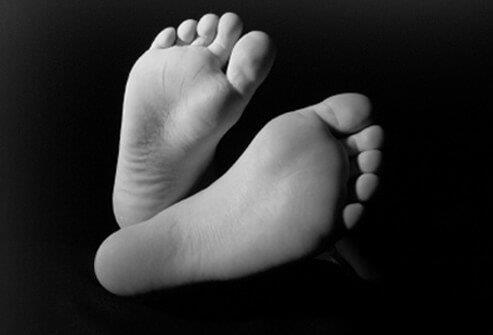

Home / Categoria
Piede diabetico
Approfondimenti, schede e guide pratiche: 21 voci collegate alla categoria.

CHE COS'È IL DIABETE? Il diabete è la nona causa di morte in Italia. È una malattia in cui i livelli di glucosio nel sangue sono al di sopra di quello che è considerato il livello normale. La maggior parte del cibo che mangiamo...
COME PUOI AIUTARE A PREVENIRE IL DIABETE? Gli studi hanno dimostrato che una moderata perdita di peso e l'esercizio fisico possono aiutare a prevenire o possibilmente ritardare il diabete di tipo 2 tra gli adulti ad alto rischio...
infezioni. Quando il diabete non è ben controllato, sono probabili danni agli organi e compromissione del sistema immunitario. I problemi ai piedi si sviluppano comunemente nelle persone con diabete e possono diventare...
trattamento per i problemi del piede diabetico sia migliorato, la prevenzione, compreso un buon controllo del livello di zucchero nel sangue, rimane il modo migliore per prevenire le complicanze diabetiche. o Le persone con...
o Pelle dura e lucida sulle gambe Il calore localizzato può essere un segno di infezione o infiammazione, imputabile a ferite che non guariscono o che guariscono troppo lentamente. Qualsiasi rottura della pelle è grave e può...
DOMANDA Cos'è la neuropatia periferica diabetica?Vedi risposta Quali sono le cause e i fattori di rischio per i problemi del piede diabetico? Diversi fattori di rischio aumentano le possibilità di una persona con diabete di...
o Se il paziente ha anomalie del piede comuni come piedi piatti, borsiti o dita a martello, potrebbero essere necessarie scarpe da prescrizione o inserti per scarpe. Danni ai nervi: le persone con diabete di vecchia data o...
infezioni o Il piede d'atleta, un'infezione fungina della pelle o delle unghie dei piedi, può portare a infezioni batteriche più gravi e deve essere trattata prontamente. o Le unghie incarnite dovrebbero essere trattate...
Qualsiasi nuova vescica, ferita o ulcera di diametro inferiore a 2,5 cm può diventare un problema più serio. Il paziente dovrà sviluppare un piano con un medico su come trattare queste ferite. Eventuali nuove aree di calore,...
Calli o calli che si sviluppano sui piedi devono essere rimossi professionalmente. La rimozione della casa non è raccomandata. La febbre, definita come una temperatura superiore a 98,6 ° F (37 ° C), in associazione con altri...
Ferite o ulcere che sono più di circa 1 pollice di diametro sui piedi o sulle gambe sono spesso associate a infezioni pericolose per gli arti. Rossore o striature rosse che si diffondono da una ferita o un'ulcera sui piedi o...

Diabete e problemi ai piedi Quali procedure e test diagnosticano i problemi del piede diabetico? La valutazione medica dovrebbe includere un'anamnesi approfondita e un esame fisico e può anche includere test di laboratorio, studi...
un'ulcera degli arti inferiori, ciò può comportare il sondaggio della ferita con una sonda smussata per determinarne la profondità. Potrebbe essere necessario un piccolo debridement chirurgico della ferita (pulizia o taglio del...
Consultazione: il medico può chiedere a un chirurgo vascolare, a un chirurgo ortopedico oa entrambi di esaminare il paziente. Questi specialisti sono esperti nell'affrontare infezioni diabetiche degli arti inferiori, problemi...
Elimina gli ostacoli: sposta o rimuovi tutti gli oggetti su cui potresti inciampare o urtare i piedi. Tieni il disordine sul pavimento raccolto. Illumina i percorsi utilizzati di notte - interni ed esterni. Taglio delle unghie...

portano a una cattiva circolazione, che è un importante fattore di rischio per le infezioni del piede e, infine, le amputazioni. Controllo del diabete: seguire una dieta ragionevole, assumere i farmaci, controllare regolarmente...
Come il diabete può influenzare i tuoi piedi Quali sono i trattamenti e le linee guida per i problemi del piede diabetico? Antibiotici: se il medico determina che una ferita o un'ulcera ai piedi o alle gambe del paziente è...
Invio a podologo o chirurgo ortopedico: se il paziente ha problemi alle ossa, problemi alle unghie dei piedi, calli e duroni, dita a martello, borsiti, piedi piatti, speroni calcaneari, artrite o ha difficoltà a trovare scarpe...
Prestare particolare attenzione alla cura del diabete del paziente mentre sta guarendo un'infezione a piedi o gambe. Un buon controllo glicemico è utile non solo per la guarigione di un'ulcera che il paziente ha già, ma anche per...
Qualità della circolazione: se il flusso sanguigno nelle gambe del paziente è scarso a causa di danni ai vasi sanguigni causati dal fumo o dal diabete o da entrambi, è molto più difficile guarire le ferite. La probabilità di...
Buon controllo del diabete Esami regolari di gambe e piedi Conoscenza su come riconoscere i problemi Scegliere le calzature adeguate Esercizio fisico regolare, se in grado Evitare lesioni mantenendo sgombri i marciapiedi Far...